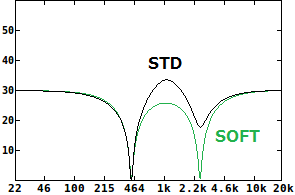

Srempy
2019年05月20日 カテゴリー：STM32
デジタルエフェクターというとディスプレイをつけたくなるもので、ポットなしでスイッチのみを使って操作するというエフェクターを製作しました。精度よく角穴加工するのはかなり大変なので、Tabby's工房さんにお願いしました。
▽ディスプレイ・スイッチ基板レイアウト
いつものようにチャタリング防止を行っています。OLEDディスプレイ・基板用押ボタンスイッチは秋月電子で購入しました。
DSP基板はOwm Pedalと同じものを使用しています。下写真のように合体させます。
ディスプレイの詳細は前回記事をご覧ください。スイッチ操作は割り込みではなくメインループで処理しています（GitHubはこちら）。エフェクトオフ時にはスイッチの反応が速くなりますが、実用上問題ないので特に対処していません。▲▼スイッチ長押しでフラッシュメモリにパラメータ保存できます。下記ページの内容を使わせていただきました。
・sora lab - STM + HAL Flashの書き込み・読み込み
エフェクトプログラムはもちろん変え放題ですが、今回私が考えたものを紹介したいと思います。※信号処理は旧処理方法（TxRxCpltCallback関数利用なし、16ビット）のままです。
アナログ回路でのフィルタ設計は複雑になる場合が多く、コンデンサの容量値も限られています。また、リアルタイムに動かすとなると可変抵抗やフォトカプラを使うぐらいしか選択肢がありません。デジタル信号処理でのフィルタについては計算方法が確立しているため、専門知識がなくとも設計可能で、任意の定数を動かすこともできます。計算式は下記ページのものを利用させていただきました。
・C++でVST作り - 簡単なデジタルフィルタの実装
フェイザーはノッチフィルタがかかったような周波数特性で、谷となる周波数が動いています（参考ページ→MXR Phase 90 Analysis）。今回はこの特性をピーキングフィルタを使って再現、発展させたエフェクトを考えました。フェイザーとワウを合わせたような効果で、5つのモード（STD、SOFT、INV、HIGH、LOW）があります。名前の由来は3つ（Three）のピーキングフィルタ（Peaking Filter）です。
＜STD・SOFTモード＞

SOFTモードでは、単純に谷となるフィルタを2つかけています。谷と谷の間は減衰し、スッキリとした感じとなります。STD（スタンダード）モードは、Phase 90の特性に近づけています。うねり感を得るためには、2つの谷の間に山が必要なようです。ちなみに2つの谷の間隔が広いとユニヴァイブのコーラスモードっぽい音になります。谷となる周波数の揺れ幅や高低は、出音への影響は少なかったです。
＜INV・HIGH・LOWモード＞
フィルタを谷ではなく山にした場合、山が1つだとオートワウのようになります。山を2つにすると、クセは強いもののフェイザーっぽいシュワシュワ感が現れます。INV（インバース）モードでは、2つの山の間にさらに谷を追加しています。HIGH／LOWモードは谷と山を混ぜており、通常のフェイザーの高音域／低音域が強調された感じとなります。
＜計算高速化＞
BiQuadフィルタの係数は三角関数の計算が入っていて、そのままでは処理に時間がかかり過ぎると思われます。そのため表計算ソフトで近似式を算出するなどして対応しています。それでも実際のCPU使用率は70%程度となってしまいましたので、計算高速化についてはもう少し検討していく予定です。